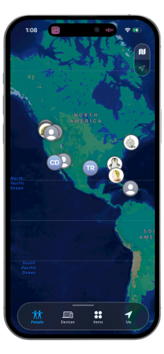
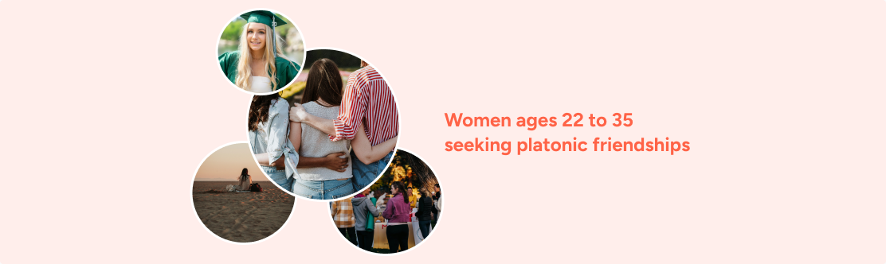
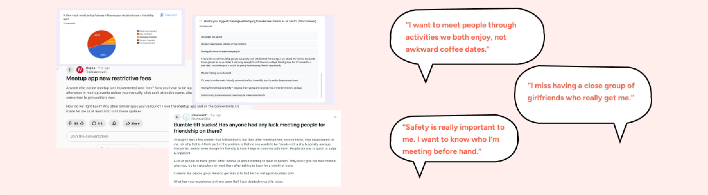
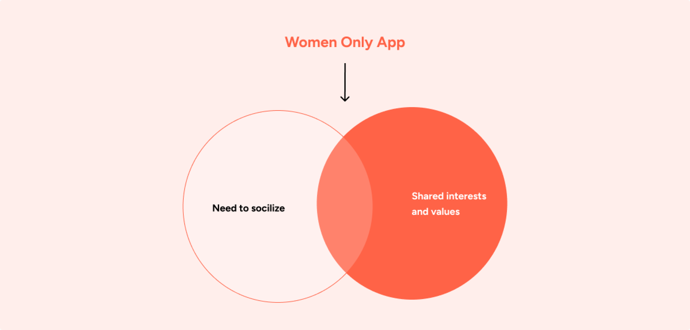
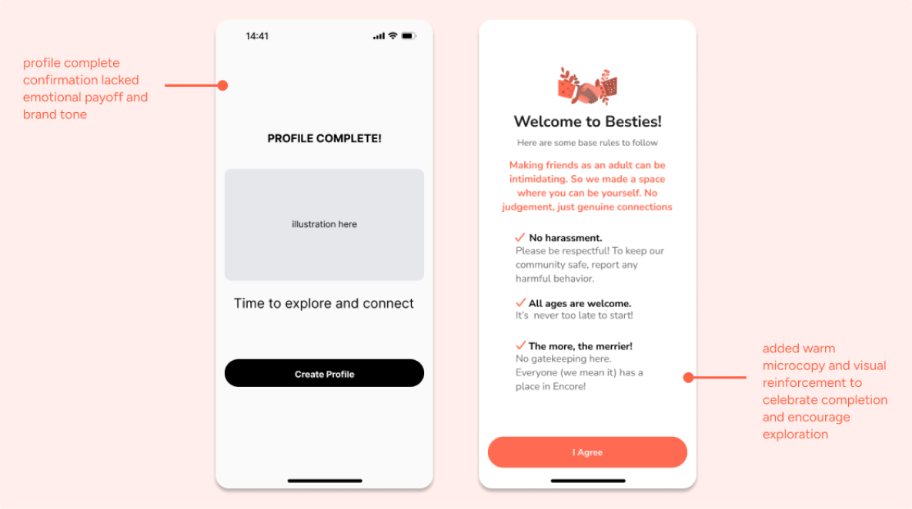
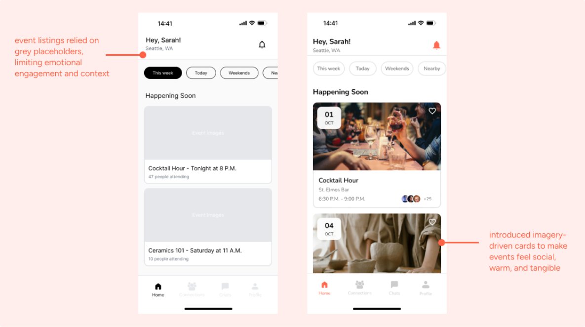
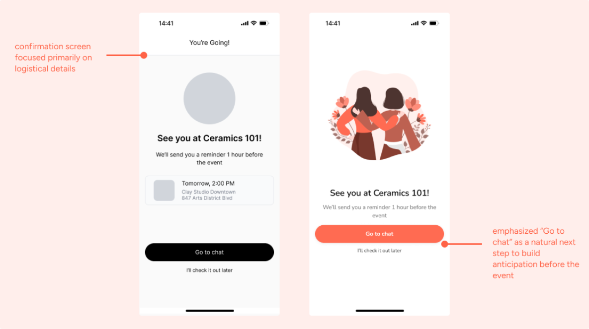

Besties
A women-only friendship app that connects people through shared interests and authentic values.

About the project
I designed Besties, a women-only friendship app that connects users through shared interests and authentic values. As the solo product designer, I owned the onboarding experience, the event browsing and RSVP features, and the post-event connection flows. I also spearheaded user research and created the Besties design system.
Background
Making friends as an adult is hard. And lonely. After college, career changes, and moves to new cities, women struggle to build genuine friendships. Existing apps don’t provide the safety and intentionality women need to form lasting bonds.

Understanding the problem
Young women (roughly 22 to 35) seeking platonic friendships consistently prioritized authentic connection, so I focused on this segment throughout research.

I launched a survey and ran interviews to learn what made women feel socially isolated, and what they looked for when making friends as an adult. Three themes came up again and again.
Distance from established friends left many women feeling lonely and cut off.
Without school or work as a natural setting, meeting like-minded people felt daunting.
Women wanted to know who they were meeting, and to do it on their own terms.
The same needs surfaced across surveys, interviews, and community threads.

How might we build a community for women navigating adult friendships through shared interests and experiences?
I looked at the tools women already reach for, and where each one falls short.
Making friends through 1:1 matching based on swipe decisions.
Attend local events around shared interests, across all demographics.
Builds deep community through structured, 4 to 6 week paid programs.
Swipe-based matching felt transactional and didn’t build natural community. Quick connections read as superficial rather than intentional.
Event-based connection was promising, but the platform lacked the safety and intentionality women want, and the broad demographic wasn’t optimal for their connection building.
Structured commitment created meaningful connections, but 4 to 6 week programs felt intimidating and blocked the spontaneous connections that fit busy schedules.
Narrowing down the solution
Through interviews and journey mapping, I found that women valued both activity-based connection and intentional matching. That pointed to a friendship app built around safety and authentic connection, made for women.

Testing and iterating
I put early screens in front of users and refined each flow, sharpening copy, visual hierarchy, and the emotional payoff with every pass.



How Besties works
Onboarding
A warm, phone-first welcome that sets community norms up front, so safety feels built in from the very first screen.
Find activities
Browse events by week, interest, and proximity, then RSVP in a tap. Connection starts with something real to do together.
Post-event connection
After an event, Besties surfaces the people you actually met and the interests you share, so a one-time hangout can grow into a friendship.
Key takeaways
Safety is a feature, not a constraint.
Designing safety in from the start, through community norms, transparency, and women-only spaces, made the product feel more inviting rather than more restrictive.
Design is rarely linear.
Research, ideation, and testing kept looping back into each other. The strongest ideas came from revisiting earlier findings with fresh eyes.